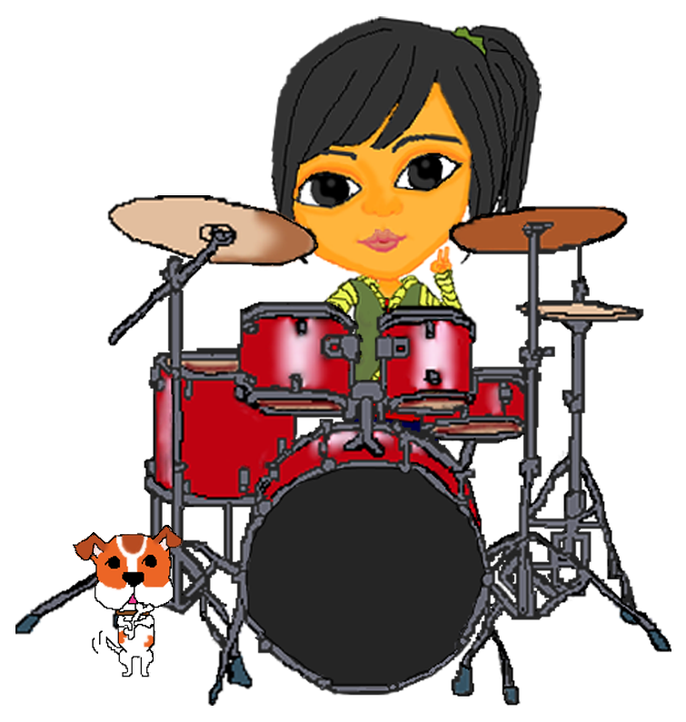

我的興趣 我， 喜歡畫畫， 並嘗試用不同材料、方式來做圖， 因為結果總是出乎意料的， 這帶給我很多驚喜; 我， 喜歡手作， 隨心所欲， 每做出一件成品， 讓我很有成就感； 我， 喜歡彈鋼琴， 或許彈的不成調， 但能讓我放慢腳步， 放鬆心情； 我， 喜歡打鼓， 別人覺得鼓很吵， 但我覺得蠻好玩的， 還能夠發洩情緒。  回首頁 以上僅供學術使用，如有任何意見，請寄信至我的電子信箱：cindychen8412absc@gmail.com